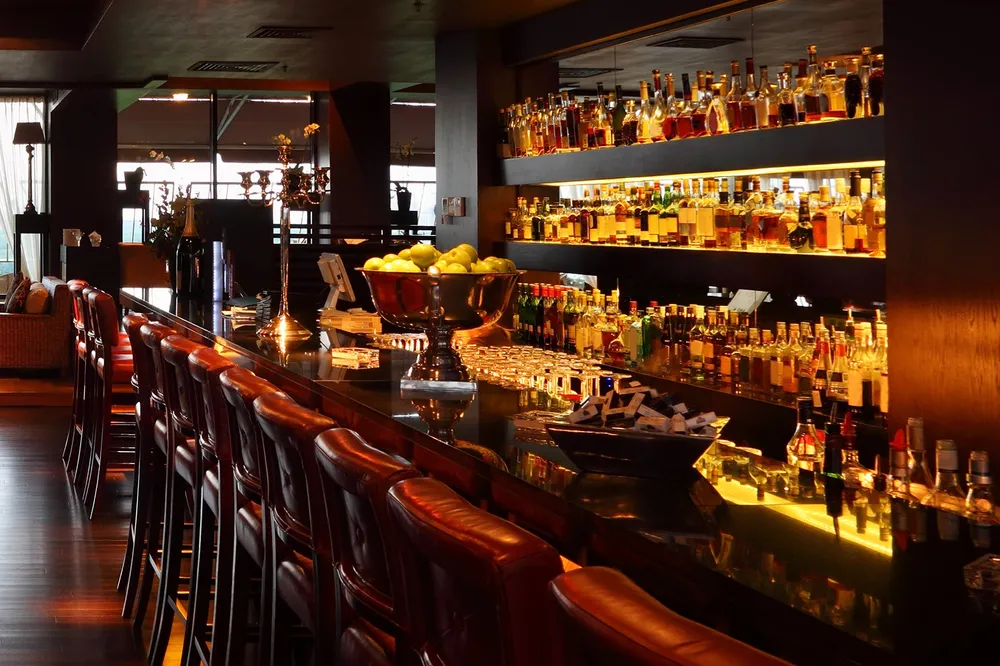

저번주 주말 밤에 용돈벌이겸 투잡 단기 설거지 알바 갔었음
육회, 육사시미, 연어 같은 비싼거부터 부대찌개나 콘치즈 같은 싼 안주도 있는 어딜가도 있을법한 술집
일반 식당에서만 일하던 사람으로 술집 설거지 드가고 느낀점
1. 회전율이 조오오오온나 느리다
밥집은 그냥 밥먹고 땡인데 확실히 술집이라 그런지 한 테이블 회전시간이 적어도 3배부터 시작
기본 1시간 이상 잡아먹는 것 같음
20 ~ 02 알바였는데 출근때 보였던 손님이랑 같이 퇴근했었음
2. 설거지 종류가 조오오오오온나 많다
밥집은 딱 그릇 앞접시 수저 냄비 이런 종류로 한테이블에서 한번 들어올때 많아야 5가지~6가지로 물량입구막기
근데 술집 이새끼들은 한테이블에서 빙수그릇, 사발, 냄비, 후라이팬, 라면냄비, 술잔, 수저, 앞접시, 쟁반 등등등등 가짓수가 조오오오오온나 많음
근데 가짓수는 많지만 물량은 적음
피크때 후딱쳐내면 할 일 없어서 폰볼 수 있음 < 사장 잘 만나야 함
3. 비싼안주 버리는 손님 많음
희안하게 싼 안주 시킨 테이블은 싹 다 비워서 오는데 비싼안주 시킨 테이블은 얼마 안먹고 많이 남겨서 옴
특히 육회, 육사시미 같은거 두점먹고 다 버린 손님도 3테이블인가 있더라
4. 생각보다 매너있는 손님 많음
진짜 밥집보다 진상이 적은 느낌이었음
할 일 없을때 눈치보여서 서빙 도와주고 음식 도와주고 했는데 서방나갈때나 계산할때, 물어볼때 매너있는 사람이 훨 많았음
근데 씨발련 하나는 친절하게 "음식나왔습니다. 뜨거우니 조심하세요~" 한거 "임식냬왰습냬댸~" ㅇㅈㄹ 하던데 냄비째로 뚝배기 마렵긴 하더라
물론 옆에서 지랄말라며 같이온 남자들이 대신 줘패줌
메뉴 가짓수나 필요한 주방집기 보면 밥집이나 술집이나 빡세긴 하더라
자영업자들 화이팅
임식냬왰습냬댸~ 개웃기네 ㅋㅋ